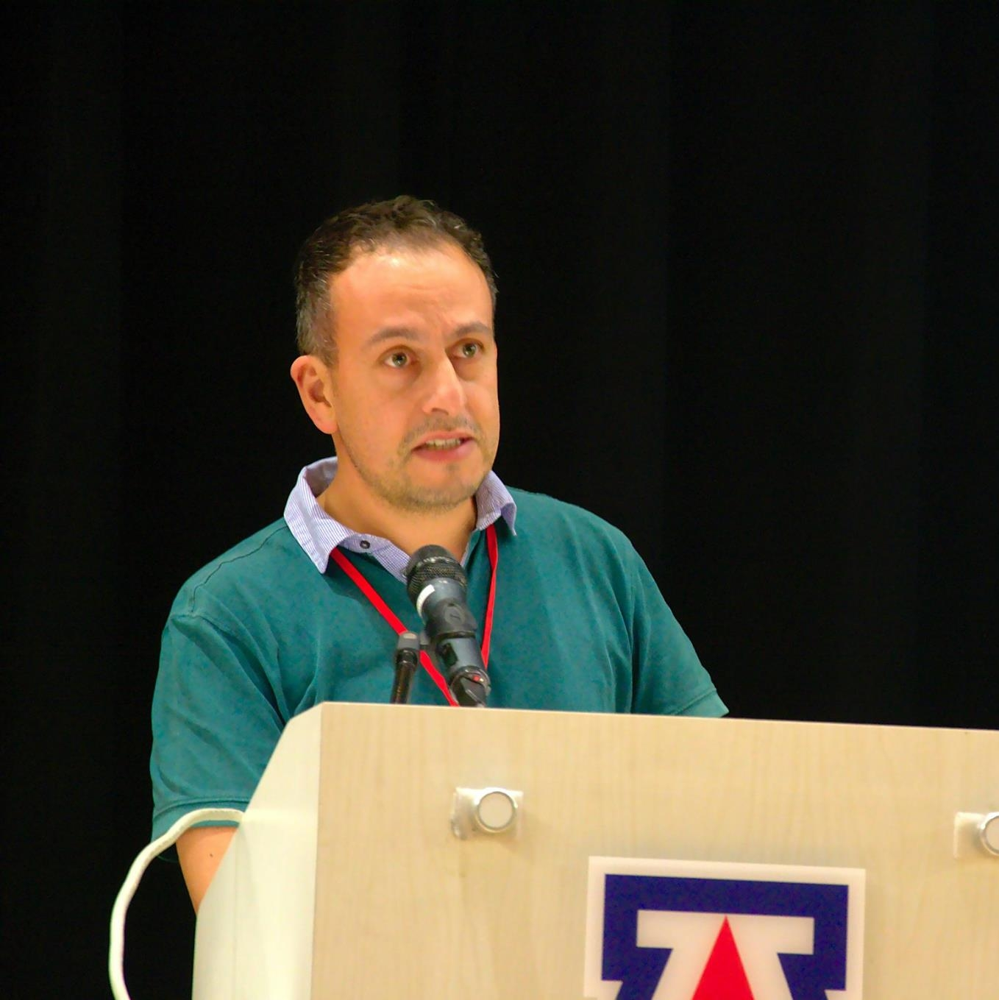

Background
Getting software released to users is often a painful, risky, and time-consuming process.
Through reliable, low-risk releases, Continuous Delivery makes it possible to continuously adapt software in line with user feedback, shifts in the market and changes to business strategy. Test, support, development and operations work together as one delivery team to automate and streamline the build, test and release process.
During the seminar we will first introduce the aspects of continuous delivery, including continuous testing, integration and deployment. Then we will present the continuous inspections tools with a set of approaches to continuously assess the product quality, with the goal of preserving the software maintainability while releasing new features.
The workshop is aimed at demonstrating and disseminating the power of DevOps in the cloud, for the purpose of increasing software maintainability and improve the development process quality.
During the seminar we will will provide to software practitioners information on how to start using DevOps and how the University of Bolzano can support them in the process of adopting DevOps.
Event Schedule
(tentative)
18 December, 2018
-
17.00
Introduction and greeting from the Vice-Rector for Research and Innovation
Johann Gamper - Free University of Bozen-Bolzano -
17.15
Introduction to Microservices: advantages, disadvantages and migration patterns.
Davide Taibi - Technical University of Tampere, FinlandMicroservices have been getting more and more popular in recent years, and several companies are migrating monolithic applications to microservices. Many companies are still hesitant to migrate because they consider microservice as a hype or because they are not aware of the migration process and the benefits and issues related to migration. In this talk, I will introduce microservices and the main migration processes adopted by practitioners, together with the common motivations and issues that commonly take place during migrations.
-
18.00
Microservices with Spring Cloud & Netflix Open Source
Paolo D'Incau - XPeppers, Bolzano & Trento, ItalyIn this session, you will see how you can harness some tools of the Spring Cloud project (e.g. Eureka, Zuul, etc etc) in order to tackle some of the common problems of distributed systems you will encounter while writing your next microservices architecture. Beware: may contain traces of live coding!
-

18.45
Domain Objects - a DevOps-based approach to realize adaptive-by-design systems.
Antonio Bucchiarone - Fondazione Bruno Kessler FBK, ItalyModern software systems are becoming more and more socio-technical systems, composed of distributed and heterogeneous agents from a mixture of people, their environment and software components. These systems operate under continuous perturbations due to the unpredicted behaviors of people and the occurrence of exogenous changes in the environment. Many approaches for self-adaptive service-based systems have been proposed in the last decades. Unfortunately, although they support run-time adaptation, current approaches tend to foresee the system adaptation requirements and their related solutions at design-time. This makes them inadequate for the application in open environments, where services, people and things constantly join/leave the system, since they require for continuous involvement of IT and domain experts for the systems re-configuration. In these settings, a new way of approaching self-adaptation is needed. In this seminar, I present a novel design for adaptation framework - Domain Objects - for modeling and executing modern service-based systems. I also present how the framework has been used in the Internet of Services (IoS) and Internet of Things (IoT) contexts.
-
19.30
Break
-

19.45
The superpowers of gitlab.
Danilo Pederiva - Alperia Fiber, ItalyGitlab is a powerful companion for software developers. At Alperia Fiber we know this quite well: let’s see how this tool supports our work on a daily basis not only for code versioning and issue tracking, but also for CI/CD-related tasks.
-
20.15
Containers Everywhere! Using Docker from Development to Production
Alex Lanz -"But it works on my machine!" Ever had this problem when something works on your lokal development environment, but then after pushing it to test or production something wired happened? In this talk I will present you a way to use the same containers (Docker) in development, test and production environments.
About Bits -
20.45
Microservices: The Journey So Far and Challenges Ahead
Claus Pahl - Free University of Bozen-BolzanoContinuous software development and the use of microservices in the cloud poses new challenges and opportunities. This talk discusses the link between architecture aspects and the underlying technology platforms that enable them.
-
21.00
Closing
-
21.15 - 22.00
Networking
Speakers
-
Davide Taibi.
Davide Taibi is a tenured Assistant Professor at the University of Tampere (Finland). His research activities are focused on software quality and cloud migration, supporting SMEs and micro-enterprises in migrating to cloud native architectures and reducing project failures due to project maintainability issues. Formerly, he worked at the Free University of Bozen-Bolzano, the Technical University of Kaiserslautern (Germany), Fraunhofer IESE – Kaiserslautern (Germany) and University of Insubria (Italy) where he has researched for more than 8 years.
-
Paolo D'Incau.
Paolo D'Incau is an Italian agile developer working at XPeppers. During the last years, he discovered how culture supported by technical practices can reshape companies and organizations. He's deeply in love with Erlang and Elixir, too :).
-
Antonio Bucchiarone.
Dr. Antonio Bucchiarone is a senior researcher in the Distributed Adaptive Systems research unit at the Bruno Kessler Foundation, Trento, Italy. His main research interests are self-adaptive service-based systems, runtime service composition and adaptation, AI planning techniques, and dynamic software architectures. He received a PhD in computer science and engineering from the IMT School for Advanced Studies Lucca. He has been the general chair of the 12th IEEE International Conference on Self-Adaptive and Self Organizing Systems (SASO 2018). He is part of the SASO Steering Committee and part of the editorial board of the IET (The Institution of Engineering and Technology) Software Journal. He has been actively involved in various research projects including the following: EIT Digital “SmartConstrution”, ALLOW Ensembles, ALLOW, S-Cube, Sensoria, etc..
-
Danilo Pederiva.
Danilo works as a Software Developer for Alperia Fiber. During the last years, he worked on shaping a microservice-based system leveraging the Spring framework to support the business of Alperia Fiber and to digitalize internal business processes. Further interests include the emerging technologies of the IoT world.
-
Alex Lanz.
Alex Lanz is a Software Developer and Architect at
About Bits . He is passionate about designing software and creating environments where developers are able to work effectively and with happiness. -
Claus Pahl.
Claus Pahl is a full professor of Software Engineering at the Free University of Bozen-Bolzano. His research activities focus on software architecture, specifically cloud migration and the use of cloud-native architectures based on microservice technologies Formerly, he was a Principal Investigator and Architecture Lead of the Cloud Technology Centre IC4.
Tickets
The registration to this workshop is free of charge, following the link below:
Organising Committee
Patrick Ohnewein
ICT & Automation Ecosystem Coordinator
IDM Südtirol - Innovation, Development and Marketing
Claus Pahl
Professor
Free University of Bozen-Bolzano